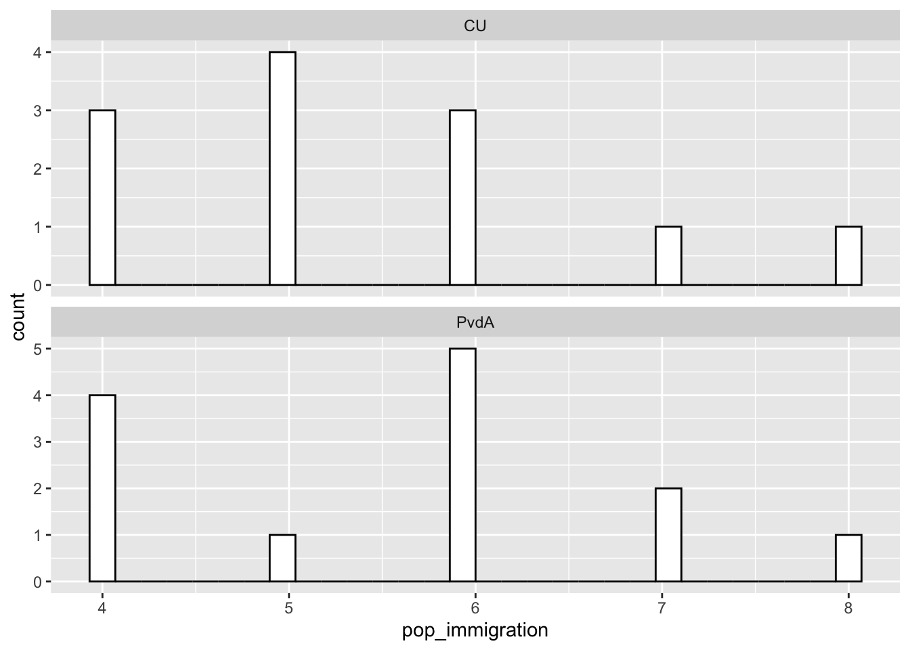

Last compiled on July, 2022
What is the conclusion of the authors about inferring about a party position using the mean of expert responses?
Isn’t right because experts don’t evaluate positions correctly, the mean create biased estimations of the true positions. The median is better because is less sensitive to high dispersion.
Pick an item that reflects a policy dimension you are intested in, from either the POPPA or CHES dataset. Find Dutch parties that have approximately equal mean-scores on that particular item; and investigate how the shape of expert placement distributions varies across these parties. Use histograms to illustrate.
pop <- read_dta("./data/expert_data_stata.dta")
# subset Dutch parties (country id=19)
pop <- pop[which(pop$country_id == 19), ]
# subset party and dimensions names(pop)
pop <- pop[, c(4, 6:21)]
pop %>%
select(party, immigration) %>%
group_by(party) %>%
summarize(mean = mean(immigration, na.rm = TRUE), std = sd(immigration, na.rm = TRUE)) %>%
arrange(desc(mean)) %>%
mutate(dif = lag(mean) - mean) %>%
print(n = 100)#> # A tibble: 13 × 4
#> party mean std dif
#> <chr> <dbl> <dbl> <dbl>
#> 1 DENK 8.6 1.07 NA
#> 2 GL 7.85 1.28 0.754
#> 3 D66 6.62 1.39 1.23
#> 4 PvdD 6.38 0.744 0.240
#> 5 PvdA 5.62 1.33 0.760
#> 6 CU 5.42 1.24 0.199
#> 7 SP 4.54 1.27 0.878
#> 8 50Plus 3.75 0.5 0.788
#> 9 CDA 3.15 0.987 0.596
#> 10 VVD 2.85 1.14 0.308
#> 11 SGP 2.17 0.835 0.679
#> 12 FvD 0.462 0.776 1.71
#> 13 PVV 0.154 0.376 0.308df_pop <- pop %>%
select(party, pop_immigration = immigration) %>%
filter(party %in% c("PvdA", "CU"))
df_pop %>%
ggplot(aes(x = pop_immigration)) + geom_histogram(color = "black", fill = "white", position = "identity") +
facet_wrap(~party, scales = "free_y", nrow = 2)
Based on the article and your own empirical insights, make an informed decision about how to aggregate the expert-level responses regarding this dimension to the party-level. Use this strategy to aggregate the responses and construct a dataframe (named: df) with rows reflecting the parties and column reflecting the aggregated scores on the picked dimension(s).
df_pop_agg <- pop %>%
group_by(party) %>%
summarize(pop_immigration = mean(immigration, na.rm = T))
dpes <- read_spss("./data/DPES2021 v1.0.sav")
df <- dpes %>%
select(S152, N76) %>%
group_by(N76) %>%
summarize(dpes_sentence_death = median(S152, na.rm = T)) %>%
mutate(party = as.character(as_factor(N76))) %>%
select(-N76)
merged <- df_pop_agg %>%
full_join(df, by = "party")
merged %>%
print(n = 100)#> # A tibble: 31 × 3
#> party pop_immigration dpes_sentence_death
#> <chr> <dbl> <dbl>
#> 1 50Plus 3.75 NA
#> 2 CDA 3.15 4
#> 3 CU 5.42 NA
#> 4 D66 6.62 5
#> 5 DENK 8.6 3
#> 6 FvD 0.462 NA
#> 7 GL 7.85 NA
#> 8 PvdA 5.62 5
#> 9 PvdD 6.38 4
#> 10 PVV 0.154 2
#> 11 SGP 2.17 3
#> 12 SP 4.54 4
#> 13 VVD 2.85 4
#> 14 GroenLinks NA 5
#> 15 ChristenUnie NA 4
#> 16 50PLUS NA 3
#> 17 Forum voor Democratie NA 3
#> 18 BIJ1 NA 4
#> 19 BoerBurgerBeweging NA 2.5
#> 20 Code Oranje NA 4
#> 21 JA21 NA 3
#> 22 Libertaire Partij NA 4
#> 23 Lijst Henk Krol NA 3
#> 24 NIDA NA 3
#> 25 Piratenpartij NA 5
#> 26 Splinter NA 2.5
#> 27 Vrijzinnige partij NA 4
#> 28 Other party NA 5
#> 29 Blank NA 3.5
#> 30 Invalid NA 4
#> 31 <NA> NA 4fsave(merged, "positions_data.RData")#> [1] "SAVED: ./data/processed/20220707positions_data.RData"